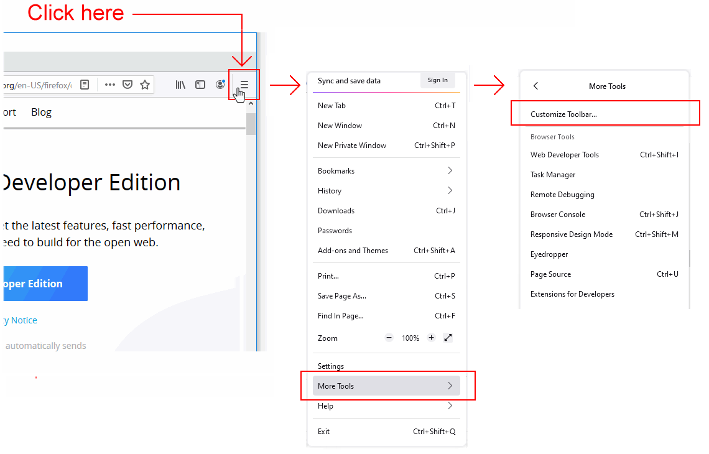
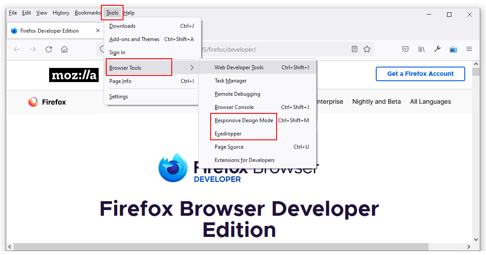
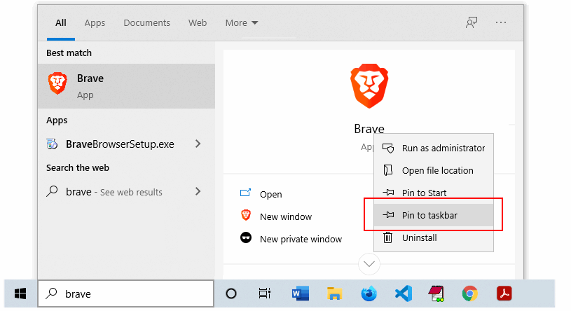

Learning Goals
At the end of this Tutorial, you will be able to:
- Download and install two web browsers: Brave and Mozilla Firefox Developer Edition.
- Display the Menu Bar in Mozilla Firefox Developer Edition.
- View a web page’s HTML source code and linked CSS stylesheet files.
About web browsers
A web browser is a software program or app that gives you access to web pages and services on the Internet. With a web browser, you can display text, images and animations, watch videos, listen to audio podcasts and music, exchange emails, and purchase products and services.
View a chart of web browser popularity in Europe
Default web browsers
Your laptop or desktop computer comes with a default web browser pre-installed:
- Microsoft Edge: This web browser is included with the Microsoft Windows operating system. Since 2016, Microsoft has recommended using Edge as a replacement for the earlier and flawed Internet Explorer browser.
- Safari: This web browser is included in the macOS and iOS operating systems used on Apple computers, tablets and mobile phones.
In these Tutorials, you will instead use two web browsers most popular with web designers and developers: Brave (similar to Google Chrome but faster) and Mozilla Firefox Developer Edition.
Installing Brave
Brave is a privacy-focused web browser developed by Brendan Eich, creator of the JavaScript programming language. Both Brave and Google Chrome are based on the same open-source software code, so both work in a largely similar way and support almost all the same browser extensions.
Because Brave blocks ads and website trackers, it can run up to six times faster than Chrome. Follow these steps to download and install it.
- Use your current web browser to go to this web address: https://brave.com
- Click the button named Download Brave
 Brave will begin downloading the appropriate version for your computer and operating system. Follow the usual download and installation instructions.
Brave will begin downloading the appropriate version for your computer and operating system. Follow the usual download and installation instructions.
The Brave web browser will install and then open on your computer.
Installing Mozilla Firefox Developer Edition
The Firefox Developer Edition is a version of the Firefox web browser from Mozilla that is tailored for web designers and developers. You can install and use both this and the regular version of Firefox on the same computer.
Follow these steps to download and install Mozilla Firefox Developer Edition.
- Use your current web browser to go to this web address: https://www.mozilla.org/en-US/firefox/developer/
- Click the button named Firefox Developer Edition
 Firefox will begin downloading the appropriate version for your computer and operating system.
Firefox will begin downloading the appropriate version for your computer and operating system. - Follow the usual download and installation instructions for your computer.

The Firefox Developer Edition web browser will install and then open on your computer.
Displaying the Menu Bar in Firefox
You will find it easier to use Firebox Developer Edition if you display the Menu Bar that is hidden by default. Here are the steps:
- At the top-right of the Firefox screen, click the hamburger (three lines) icon to display a dropdown menu of options. 
- From this menu, choose the More tools command.
- From the next menu displayed, choose the Customize Toolbar command.
- Along the bottom of the next screen, you can see a number of options. One is a dropdown list named Toolbars.
 Click on Toolbars and then click the Menu Bar option to select it.
Click on Toolbars and then click the Menu Bar option to select it. - When finished, click the Done button at the bottom-right of the screen.
You can now see that the Menu Bar, with its various menus of commands, is visible at the top of the Firefox screen.

As a web designer and front-end developer, the Menu Bar options you will use most frequently are those available with the Tools | Browser Tools command.
Viewing HTML and CSS source files
You can use a web browser to display the underlying HTML and CSS code for a web page. Here is an example:
- Use your web browser to go to this web address:
https://www.citizens
information.ie - Right-click anywhere on the web page. From the context menu displayed, choose the View Page Source command.
 You can now see the HTML code of the web page in a new tab of your web browser.
You can now see the HTML code of the web page in a new tab of your web browser.

- Web pages are typically linked to one or more stylesheet files that control their visual appearance – such as the position of various elements, their fonts and colours.
Stylesheet files are included near the top of the HTML code in the <head> section, and their file names end in .css. You will also see that they are shown as clickable hyperlinks.
In this example, you can see two stylesheet files, named print.css and screen.css.

- Click on the second stylesheet, screen.css
 You can now see the content of the stylesheet.
You can now see the content of the stylesheet.
When finished, you can close the browser tabs for the Citizens Information website.
Working with DevTools
DevTools (the short name for Developer Tools) are built in to every web browser. They enable you to view and experiment with the content and code of web pages.
To open DevTools in your browser:
- Press Ctrl + Shift + i (Windows) or ⌘ + Shift + i (Mac)
- Display the Inspector (Firefox) or Elements (Brave/Chrome) tab.

- Click the arrow icon at the top-left of the DevTools window.
Changing the DevTools position
To position or ‘dock’ the DevTools window:
- Open the DevTools window.
- Near the top-right of the DevTools window, click the vertical ellipses (three dots) icon.

- Click the docking position you want for the DevTools window.
Below is an example of the DevTools window docked on the right.

And here is an example of the DevTools window docked along the bottom.

Changing the DevTools font size
To change the font size in the DevTools window, select the window, and then press the Ctrl key followed by the plus (+) or minus (-) key. To reset, press Ctrl and 0.
Pinning browsers to your Windows Taskbar
On Microsoft Windows, you can start applications in a variety of ways. For those web browsers you use frequently, it makes sense to add or ‘pin’ them to your Taskbar along the bottom of your Windows desktop. You can then launch any one of them with a single click.
To pin an application, follow these steps:
- Enter the name of the application in the Windows Search Box at the left of the Taskbar.
- When the application name is displayed, right-click on it.
- Choose Pin to taskbar from the list of options displayed. 
- Repeat these actions for as many web browsers as you want to pin to your Taskbar.
In future, when you need to launch Brave, Chrome, Firefox or other pinned browsers, you can simply and quickly click the relevant icon on the Taskbar.